Reserve Estimators¶
Note
Refer to the Quickstart Guide for invocation examples.
-
class
BaseChainLadder(cumtri)[source]¶ From the Casualty Actuarial Society’s Estimating Unpaid Claims Using Basic Techniques Version 3 (Friedland, Jacqueline - 2010), the development method (‘Chain Ladder’) consists of seven basic steps:
Compile claims data in a development triangle.
Calculate age-to-age factors.
Calculate averages of the age-to-age factors.
Select claim development factors.
Select tail factor.
Calculate cumulative claims.
Project ultimate claims.
The BaseChainLadder class encapsulates logic to perform steps 1-7.
- Parameters
cumtri (trikit.triangle.CumTriangle) – A cumulative triangle instance.
References
Friedland, J., Estimating Unpaid Claims Using Basic Techniques, Casualty Actuarial Society, 2010.
-
_cldfs(ldfs)[source]¶ Calculate cumulative loss development factors by successive multiplication beginning with the tail factor and the oldest age-to-age factor. The cumulative claim development factor projects the total growth over the remaining valuations. Cumulative claim development factors are also known as “Age-to-Ultimate Factors” or “Claim Development Factors to Ultimate”.
- Parameters
ldfs (pd.Series) – Selected ldfs, typically the output of calling
self._ldfs.- Returns
- Return type
pd.Series
-
_reserves(ultimates)[source]¶ Return IBNR/reserve estimates by origin and in aggregate. Represents the difference between ultimate projections for each origin period and the latest cumulative value. Since outstanding claim liabilities can be referred to differently based on the type of losses represented in the triangle (“ibnr” if reported/incurred, “unpaid” if paid losses), we use the general term “reserve” to represent the difference between ultimate projections and latest cumulative value by origin and in total.
- Parameters
ultimates (pd.Series) – Estimated ultimate losses, conventionally obtained from BaseChainLadder’s
_ultimatesmethod.- Returns
- Return type
pd.Series
-
_trisqrd(ldfs)[source]¶ Project claims growth for each future development period. Returns a DataFrame of loss projections for each subsequent development period for each origin period. Populates the triangle’s lower-right or southeast portion (i.e., the result of “squaring the triangle”).
- Parameters
ldfs (pd.Series) – Selected ldfs, typically the output of calling
self._ldfs.- Returns
- Return type
pd.DataFrame
-
_ultimates(cldfs)[source]¶ Ultimate claims are equal to the product of the latest valuation of losses (the amount along latest diagonal of any
_CumTriangleinstance) and the appropriate cldf/age-to-ultimate factor. We determine the appropriate age-to-ultimate factor based on the age of each origin year relative to the evaluation date.- Parameters
cldfs (pd.Series) – Cumulative loss development factors, conventionally obtained via BaseChainLadder’s
_cldfsmethod.- Returns
- Return type
pd.Series
-
class
BaseChainLadderResult(summary, tri, sel, ldfs, tail, trisqrd)[source]¶ Container object for BaseChainLadder output.
- Parameters
summary (pd.DataFrame) – Chain Ladder summary compilation.
tri (trikit.triangle._CumTriangle) – A cumulative triangle instance.
sel (str or array_like) – Reference to loss development selection. If ldf overrides are utilized,
selwill be identical toldfs.ldfs (pd.Series) – Loss development factors.
tail (float) – Tail factor. Defaults to 1.0.
trisqrd (pd.DataFrame) – Projected claims growth for each future development period.
-
_data_transform()[source]¶ Transform dataset for use in FacetGrid plot by origin exhibting chain ladder reserve estimates.
- Returns
- Return type
pd.DataFrame
-
static
_get_yticks(x)[source]¶ Determine y axis tick labels for a given maximum loss amount x. Return tuple of tick values and ticklabels.
- Parameters
x (float) – Maximum value for a given origin period.
- Returns
- Return type
tuple of ndarrays
-
plot(actuals_color='#334488', forecasts_color='#FFFFFF', axes_style='darkgrid', context='notebook', col_wrap=4, hue_kws=None, exhibit_path=None, **kwargs)[source]¶ Visualize actual losses along with projected chain ladder development.
- Parameters
actuals_color (str) – A color name or hexidecimal code used to represent actual observations. Defaults to “#00264C”.
forecasts_color (str) – A color name or hexidecimal code used to represent forecast observations. Defaults to “#FFFFFF”.
axes_style (str) – Aesthetic style of plots. Defaults to “darkgrid”. Other options include: {whitegrid, dark, white, ticks}.
context (str) – Set the plotting context parameters. According to the seaborn documentation, This affects things like the size of the labels, lines, and other elements of the plot, but not the overall style. Defaults to “notebook”. Additional options include {“paper”, “talk”, “poster”}.
col_wrap (int) – The maximum number of origin period axes to have on a single row of the resulting FacetGrid. Defaults to 5.
hue_kws (dictionary of param:list of values mapping) – Other keyword arguments to insert into the plotting call to let other plot attributes vary across levels of the hue variable (e.g. the markers in a scatterplot). Each list of values should have length 2, with each index representing aesthetic overrides for forecasts and actuals respectively. Defaults to
None.exhibit_path (str) – Path to which exhibit should be written. If None, exhibit will be rendered via
plt.show().kwargs (dict) – Additional styling options for scatter points. This can override default values for
plt.plotobjects. For a demonstration, See the Examples section.
Examples
Demonstration of passing a dictionary of plot properties in order to update the scatter size and marker:
In [1]: import trikit In [2]: tri = trikit.load(dataset="raa", tri_type="cum") In [3]: cl = tri.base_cl(sel="all-weighted", tail=1.005) In [4]: kwds = dict(marker="s", markersize=6) In [5]: cl.plot(**kwds)
-
class
MackChainLadder(cumtri)[source]¶ Mack Chain Ladder estimator. The predicition variance is comprised of the estimation variance and the process variance. Estimation variance arises from the inability to accurately define the distribution from which past events have been generated. Process variance arises from the inability to accurately predict which single outcome from the distribution will occur at a given time. The predicition error is defined as the standard deviation of the forecast.
- Parameters
cumtri (triangle._CumTriangle) – A cumulative.CumTriangle instance
References
Mack, Thomas (1993) Measuring the Variability of Chain Ladder Reserve Estimates, 1993 CAS Prize Paper Competition on Variability of Loss Reserves.
Mack, Thomas, (1993), Distribution-Free Calculation of the Standard Error of Chain Ladder Reserve Estimates, ASTIN Bulletin 23, no. 2:213-225.
Mack, Thomas, (1999), The Standard Error of Chain Ladder Reserve Estimates: Recursive Calculation and Inclusion of a Tail Factor, ASTIN Bulletin 29, no. 2:361-366.
England, P., and R. Verrall, (2002), Stochastic Claims Reserving in General Insurance, British Actuarial Journal 8(3): 443-518.
Murphy, Daniel, (2007), Chain Ladder Reserve Risk Estimators, CAS E-Forum, Summer 2007.
Carrato, A., McGuire, G. and Scarth, R. 2016. A Practitioner’s Introduction to Stochastic Reserving, The Institute and Faculty of Actuaries. 2016.
-
_devp_variance(ldfs, alpha=1)[source]¶ Compute the development period variance, usually represented as
 in the literature. For a triangle with
n development periods, result will contain n-1 elements.
in the literature. For a triangle with
n development periods, result will contain n-1 elements.- Parameters
ldfs (pd.Series) –
- Selected ldfs, typically the output of calling
self._ldfs, or a series of values indexed by development period.
- alpha: {0, 1, 2}
0: Straight average of observed individual link ratios.
1: Historical Chain Ladder age-to-age factors.
2: Regression of 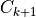 on 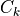 with 0 intercept.
- Selected ldfs, typically the output of calling
- Returns
- Return type
pd.Series
-
_ldf_variance(devpvar, alpha=1)[source]¶ Compute the variance of a given development period’s link ratios w.r.t. selected ldfs.
- devpvar: pd.Series
The development period variance, usually represented as
in the literature. For a triangle with
n development periods, devpvar will contain n-1 elements.- alpha: {0, 1, 2}
0: Straight average of observed individual link ratios.
1: Historical Chain Ladder age-to-age factors.
2: Regression of :math`C_{k+1}` on :math: C_{k} with 0 intercept.
- Returns
- Return type
pd.Series
-
_ldfs(alpha=1, tail=1.0)[source]¶ Compute Mack loss development factors.
- Parameters
alpha ({0, 1, 2}) –
0: Straight average of observed individual link ratios.
1: Historical Chain Ladder age-to-age factors.
2: Regression of on with 0 intercept.
tail (float) – Tail factor. At present, must be 1.0. This may change in a future release.
- Returns
- Return type
pd.Series
-
_mean_squared_error(process_error, parameter_error)[source]¶ Compute the mean squared error of reserve estimates for each origin period. The standard error for each origin period is the square root of the mean squared error.
- Parameters
process_error (pd.Series) – Reserve estimate process error indexed by origin. Represents the risk associated with the projection of future contingencies that are inherently variable, even if the parameters are known with certainty.
parameter_error (pd.Series) – Reserve estimate parameter error indexed by origin. Represents the risk that the parameters used in the methods or models are not representative of future outcomes.
- Returns
- Return type
pd.Series
-
_parameter_error(ldfs, ldfvar)[source]¶ Return a triangle-shaped DataFrame containing elementwise parameter error. To obtain the parameter error for a given origin period, cells are aggregated across columns.
- Parameters
ldfs (pd.Series) – Selected ldfs, typically the output of calling
self._ldfs, or a series of values indexed by development period.ldfvar (pd.Series) – Link ratio variance. For a triangle with n development periods, ldfvar will contain n-1 elements.
- Returns
- Return type
pd.DataFrame
-
_process_error(ldfs, devpvar)[source]¶ Return a triangle-shaped DataFrame containing elementwise process error. To obtain the process error for a given origin period, cells are aggregated across columns.
- Parameters
ldfs (pd.Series) – Selected ldfs, typically the output of calling
self._ldfs, or a series of values indexed by development period.devpvar (pd.Series) – The development period variance, usually represented as
in the literature. For a triangle with
n development periods, devpvar will contain n-1 elements.
- Returns
- Return type
pd.DataFrame
-
property
mod_a2aind¶ Return self.tri.a2aind with lower right 0s replaced with NaN.
- Returns
- Return type
pd.DataFrame
-
property
mod_tri¶ Return modified triangle-shaped DataFrame with same indices as
self.tri.a2a.- Returns
- Return type
pd.DataFrame
-
class
MackChainLadderResult(summary, tri, alpha, tail, ldfs, trisqrd, dist, process_error, parameter_error, devpvar, ldfvar, rvs, **kwargs)[source]¶ Container class for
MackChainLadderoutput.- Parameters
summary (pd.DataFrame) –
MackChainLaddersummary.tri (trikit.triangle.CumTriangle) – A cumulative triangle instance.
alpha (int) – MackChainLadder alpha parameter.
tail (float) – Tail factor.
ldfs (pd.Series) – Loss development factors.
trisqrd (pd.DataFrame) – Projected claims growth for each future development period.
dist (str) – The distribution function chosen to approximate the true distribution of reserves by origin period. Wither “norm” or “lognorm”.
process_error (pd.Series) – Reserve estimate process error indexed by origin. Represents the risk associated with the projection of future contingencies that are inherently variable, even if parameters are known with certainty.
parameter_error (pd.Series) – Reserve estimate parameter error indexed by origin. Represents the risk that the parameters used in the methods or models are not representative of future outcomes.
devpvar (pd.Series) – The development period variance, usually represented as
in the literature. For a triangle having
n development periods, devpvarwill contain n-1 elements.ldfvar (pd.Series) – Variance of age-to-age factors. Required for Murphy’s recursive estimator of parameter risk. For a triangle having n development periods,
ldfvarwill contain n-1 elements.rvs (pd.Series) – Series indexed by origin containing Scipy frozen random variable with parameters mu and sigma having distribution specified by
dist.kwargs (dict) – Additional parameters originally passed into
MackChainLadder’s__call__method.
-
_cy_effects_table()[source]¶ Construct a tabular summary of values used in assessing the presence of significant calendar year influences in the set of age-to-age factors. Resulting DataFrame contains the following columns:
- j:
The diagonal in question. For a triangle with n periods, j ranges from 2 to n - 1. The most recent diagonal is associated with j = n - 1.
- S:
Represents the number of small age-to-age factors for a given diagonal. Recall that small age-to-age factors are those less than the median for a given development period.
- L:
Represents the number of large age-to-age factors for a given diagonal. Recall that large age-to-age factors are those greater than the median for a given development period.
- Z:
For a given j, 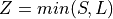.
- n:
For a given j, is defined as 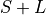.
- m:
For a given j, is defined as 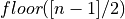.
- E_Z:
For a given j, is defined as 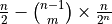.
- V_Z:
For a given j, is defined as 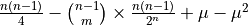.
- Returns
- Return type
pd.DataFrame
-
_devp_corr_test_var()[source]¶ Return the variance used in the development period correlation test.
- Returns
- Return type
-
_mack_data_transform()[source]¶ Generate data by origin period and in total to plot estimated reserve distributions.
- Returns
- Return type
pd.DataFrame
-
_residuals_by_devp()[source]¶ Calculate standardized residuals by development period.
- Returns
- Return type
pd.DataFrame
-
_residuals_by_origin()[source]¶ Calculate standardized residuals by origin period.
- Returns
- Return type
pd.DataFrame
-
_spearman_corr_coeffs()[source]¶ Compute the Spearman correlation coefficients for each pair of equal sized columns from
self.tri._ranked_a2a.For adjacent columns, a Spearman coefficient close to 0 indicates that the development factors between development years k - 1 and k and those between developmenr years k and k+1 are uncorrelated. Any other value of 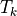 indicates that the factors are positively or negatively correlated.
In the resulting DataFrame, columns are defined as:
- k:
An enumeration of the target development period.
- w:
Quanity used to weight the Spearman coefficient, specified as n - k - 1, where n is the number of origin periods in the triangle.
- T_k:
Spearman correlation coefficient. Defined as 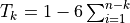.
- Returns
- Return type
pd.DataFrame
References
1. Mack, Thomas (1993) Measuring the Variability of Chain Ladder Reserve Estimates, 1993 CAS Prize Paper Competition on Variability of Loss Reserves.
-
_spearman_corr_total()[source]¶ Weighted average of each adjacent column’s Spearman coefficient from
self._spearman_corr_coeffs. Correlation coefficients are weighted by
-
cy_effects_test(p=0.05)[source]¶ We reject the hypothesis, with an error probability of p, of having no significant calendar year effects only if not:
E_Z - 1.96 * sqrt(V_Z) <= Z <= E_Z + 1.96 * sqrt(V_Z) (if p = .05)
-
devp_corr_test(p=0.5)[source]¶ Significance test to assess the degree of development period correlation. The first element of the returned tuple contains the upper and lower bounds of the test interval. The second element represents the test statistic, the weighted average of Spearman rank correlation coefficients. If the test statistic falls within the range bounded by the first element, the null hypothesis of having uncorrelated development factors is not rejected. If the test statistic falls outside the interval, development period correlations should be analyzed in greater detail.
-
diagnostics(**kwargs)[source]¶ Statistical diagnostics plots of Mack Chain Ladder estimator. Exhibit is a faceted quad plot, representing the estimated reserve distribution, the path to ultimate for each origin period, and residuals by origin and development period.
-
get_quantiles(q)[source]¶ Get quantiles of estimated reserve distribution for an individual origin periods and in total. Returns a DataFrame, with columns representing the percentiles of interest.
- Parameters
q (array_like of float or float) – Quantile or sequence of quantiles to compute, which must be between 0 and 1 inclusive.
- Returns
- Return type
pd.DataFrame
-
plot(q=0.95, dist_color='#000000', q_color='#E02C70', axes_style='darkgrid', context='notebook', col_wrap=4, exhibit_path=None)[source]¶ Plot estimated reserve distribution by origin year and in total. The mean of the reserve estimate will be highlighted, along with and quantiles specified in
q.- Parameters
q (float in range of [0,1]) – The quantile to highlight, which must be between 0 and 1 inclusive.
dist_color (str) – Color or hexidecimal color code of estimated reserve distribution.
q_color (str) – Color or hexidecimal color code of estimated reserve mean and quantiles.
axes_style ({"darkgrid", "whitegrid", "dark", "white", "ticks"}) – Aesthetic style of seaborn plots. Default values is “darkgrid”.
context ({"notebook", "paper", "talk", "poster"}.) – Set the plotting context parameters. According to the seaborn documentation, This affects things like the size of the labels, lines, and other elements of the plot, but not the overall style. Default value is “notebook”.
col_wrap (int) – The maximum number of origin period axes to have on a single row of the resulting FacetGrid. Defaults to 5.
exhibit_path (str) – Path to which exhibit should be written. If None, exhibit will be rendered via
plt.show().
-
class
BootstrapChainLadder(cumtri)[source]¶ The purpose of the bootstrap technique is to estimate the predicition error of the total reserve estimate and to approximate the predictive distribution. It is often impractical to obtain the prediction error using an analytical approach due to the complexity of reserve estimators.
Predicition error is comprised of two components: process error and estimation error (Prediction Error = Estimation Error + Process Error). The estimation error (parameter error) represents the uncertainty in the parameter estimates given that the model is correctly specified. The process error is analogous to the variance of a random variable, representing the uncertainty in future outcomes.
The procedure used to generate the predicitive distribution of reserve estimates is based on Leong et al. Appendix A, assuming the starting point is a triangle of cumulative losses:
Calculate the all-year volume-weighted age-to-age factors.
Estimate the fitted historical cumulative paid loss and ALAE using the latest diagonal of the original triangle and the age-to-age factors from [1] to un-develop the losses.
Calculate the unscaled Pearson residuals, degrees of freedom and scale parameter.
Calculate the adjusted Pearson residuals.
Sample with replacement from the adjusted Pearson residuals.
Calculate the triangle of sampled incremental losses (I^ = m + r_adj * sqrt(m)), where I^ = Resampled incremental loss, m = Incremental fitted loss (from [2]) and r_adj = Adjusted Pearson residuals.
Using the triangle from [6], project future losses using the Chain Ladder method.
Include Process variance by simulating each incremental future loss from a Gamma distribution with mean = I^ and variance = I^ * scale parameter.
Estimate unpaid losses using the Chain Ladder technique.
Repeat for the number of cycles specified.
The collection of projected ultimates for each origin year over all bootstrap cycles comprises the predictive distribtuion of reserve estimates. Note that the estimate of the distribution of losses assumes development is complete by the final development period. This is to avoid the complication associated with modeling a tail factor.
References
England, P., and R. Verrall, (2002), Stochastic Claims Reserving in General Insurance, British Actuarial Journal 8(3): 443-518.
CAS Working Party on Quantifying Variability in Reserve Estimates, The Analysis and Estimation of Loss & ALAE Variability: A Summary Report, Casualty Actuarial Society Forum, Fall 2005.
Leong et al., (2012), Back-Testing the ODP Bootstrap of the Paid Chain-Ladder Model with Actual Historical Claims Data, Casualty Actuarial Society E-Forum.
Kirschner, et al., Two Approaches to Calculating Correlated Reserve Indications Across Multiple Lines of Business Appendix III, Variance Journal, Volume 2/Issue 1.
Shapland, Mark R., (2016), Using the ODP Bootstrap Model: A Practicioner’s Guide, CAS Monograph Series Number 4: Casualty Actuarial Society, 2016.
-
_bs_forecasts(dfsamples, dfldfs, scale_param)[source]¶ Populate lower-right of each simulated triangle using values from
self._bs_samplesand development factors fromself._bs_ldfs.- Parameters
dfsamples (pd.DataFrame) – Output from
self._bs_samples.dfldfs (pd.DataFrame) – Output from
self._bs_ldfs.scale_param (float) – the sum of the squared unscaled Pearson residuals over the degrees of freedom. Output from
self._scale_param.
- Returns
- Return type
pd.DataFrame
-
_bs_ldfs(dfsamples)[source]¶ Compute and return loss development factors for each set of synthetic loss data.
- Parameters
dfsamples (pd.DataFrame) – Output from
self._bs_samples.- Returns
- Return type
pd.DataFrame
-
static
_bs_process_error(dfforecasts, scale_param, procdist='gamma', random_state=None)[source]¶ Incorporate process error by simulating each incremental future loss from
procdist. The mean is set to the forecast incremental loss amount and variance to mean x self.scale_param. The parameters forprocdistmust be positive. Since the mean and variance used to parameterizeprocdistdepend on the resampled incremental losses, it is necessary to incorporate logic to address the possibility of negative incremental losses arising in the resampling stage. The approach used to handle negative incremental values is described in Shapland[1], and replaces the distribution mean with the absolute value of the mean, and the variance with the absolute value of the mean multiplied byscale_param.- Parameters
dfforecasts (pd.DataFrame) – DateFrame of bootstraps forecasts generated within
self._bs_forecasts.scale_param (float) – the sum of the squared unscaled Pearson residuals over the degrees of freedom. Available in
self._scale_param.procdist (str) – Specifies the distribution used to incorporate process error. Currently, can only be set to “gamma”. Any other distribution will result in an error.
random_state (np.random.RandomState) – If int, random_state is the seed used by the random number generator; If RandomState instance, random_state is the random number generator; If None, the random number generator is the RandomState instance used by np.random.
- Returns
- Return type
pd.DataFrame
-
static
_bs_reserves(dfprocerror)[source]¶ Compute unpaid loss reserve estimate using output from
self._bs_process_error.- Parameters
dfprocerror (pd.DataFrame) – Output from
self._bs_process_error.- Returns
- Return type
pd.DataFrame
-
_bs_samples(sampling_dist, fitted_tri_incr, sims=1000, parametric=False, random_state=None)[source]¶ Return DataFrame containing sims resampled-with-replacement incremental loss triangles if
parametric=False, otherwise random variates from a normal distribution with mean zero and variance derived fromresid_adj. Randomly generated incremental data gets cumulated in preparation for ldf calculation in next step.- Parameters
sampling_dist (np.ndarray) – The residuals from the fitted incremental triangle coerced into a one-dimensional numpy array.
fitted_tri_incr (pd.DataFrame) – The incremental triangle fitted using backwards recursion. Typically the output of
self._tri_fit_incr.sims (int) – The number of bootstrap simulations to run. Defaults to 1000.
parametric (bool) – If True, fit standardized residuals to a normal distribution, and sample from the parameterized distribution. Otherwise, bootstrap procedure proceeds by sampling with replacement from the array of standardized residuals. Defaults to False.
random_state (np.random.RandomState) – If int, random_state is the seed used by the random number generator; If RandomState instance, random_state is the random number generator; If None, the random number generator is the RandomState instance used by np.random.
- Returns
- Return type
pd.DataFrame
-
static
_bs_std_error(dfreserves)[source]¶ Compute standard error of bootstrapped reserves by origin and in aggregate.
- Parameters
dfreserves (pd.DataFrame) – Output from
self._bs_reserves.- Returns
- Return type
pd.Series
-
_get_dfcombined(dfsamples, dfldfs)[source]¶ Merge output of
self._bs_samplesandself._bs_ldfs.- Parameters
dfsamples (pd.DataFrame) – Output from
self._bs_samples.dfldfs (pd.DataFrame) – Output from
self._bs_ldfs.
- Returns
- Return type
pd.DataFrame
-
_resid_adj(resid_us)[source]¶ Compute and return the adjusted Pearson residuals, given by 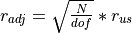, where r_adj represents the adjusted Pearson residuals, N the number of triangle cells, dof the degress of freedom and r_us the unscaled Pearson residuals.
- Parameters
resid_us (pd.DataFrame) – Unscaled Pearson residuals, typically output by
self._resid_us.- Returns
- Return type
pd.DataFrame
-
_resid_us(fitted_tri_incr)[source]¶ Return unscaled Pearson residuals, given by 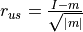, where 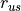 represents the unscaled Pearson residuals,
 the actual incremental losses and
the actual incremental losses and  fitted incremental losses.
fitted incremental losses.- Parameters
fitted_tri_incr (pd.DataFrame) – Typically the output from
self._tri_fit_incr.- Returns
- Return type
pd.DataFrame
-
static
_sampling_dist(resid_adj)[source]¶ Return
resid_adjas a 1-dimensional array, which will be sampled from with replacement in order to produce synthetic triangles for bootstrapping. Any NaN’s and 0’s present inresid_adjwill not be present in the returned array.- Parameters
resid_adj (pd.DataFrame) – Adjusted Pearson residuals, typically output by
self._resid_adj.- Returns
- Return type
np.ndarray
-
_scale_param(resid_us)[source]¶ Return the scale parameter, which is the sum of the squared unscaled Pearson residuals over the degrees of freedom. This method is intended for internal use only.
- Parameters
resid_us (pd.DataFrame) – Unscaled Pearson residuals, typically output by
self._resid_us.- Returns
- Return type
-
_tri_fit_cum(ldfs)[source]¶ Return the cumulative fitted triangle using backwards recursion, starting with the observed cumulative paid/incurred-to-date along the latest diagonal.
- Parameters
ldfs (pd.Series) – Selected ldfs, typically the output of calling
self._ldfs.- Returns
- Return type
pd.DataFrame
-
static
_tri_fit_incr(fitted_tri_cum)[source]¶ Return a fitted incremental triangle.
- Parameters
fitted_tri_cum (pd.DataFrame) – Typically the output from
self._tri_fit_cum.- Returns
- Return type
pd.DataFrame
-
property
dfrlvi¶ Transform triangle’s last valid origin index into DataFrame format.
- Returns
- Return type
pd.DataFrame
-
class
BootstrapChainLadderResult(summary, tri, ldfs, tail, trisqrd, reserve_dist, sims_data, scale_param, dof, unscaled_residuals, adjusted_residuals, sampling_dist, fitted_tri_cum, fitted_tri_incr, sims, procdist, parametric, q, interpolation, **kwargs)[source]¶ Container class for
BootstrapChainLadderoutput.- Parameters
summary (pd.DataFrame) – Chain Ladder summary compilation.
reserve_dist (pd.DataFrame) – The predicitive distribution of reserve estimates generated via bootstrapping.
reserve_distis a five column DataFrame consisting of the simulation number, origin period, the latest loss amount for the associated origin period, and the predictive distribution of ultimates and reserves.sims_data (pd.DataFrame) –
A DataFrame consiting of all simulated values an intermediate fields. When a large number of bootstrap iterations are run,
sims_datawill be correspondingly large. The fields include:- dev:
The simulated development period.
- incr:
The actual incremental loss amount obtain from the fitted triangle.
- incr_sqrt:
The square root of incr.
- l_act_cum:
The latest actual cumulative loss amount for dev/origin.
- l_act_dev:
The latest dev period with actual losses for a given origin period.
- ldf:
Loss development factors computed on syntehtic triangle data.
- origin:
The simulated origin period.
- rectype:
Whether the dev/origin combination represent actual or forecast data in the squared triangle.
- resid:
The resampled adjusted residuals if
parametric=False, otherwise a random sampling from a normal distribution with mean zero and variance based on the variance of the adjusted residuals.
- samp_cum:
A syntehtic cumulative loss amount.
- samp_incr:
A synthetic incremental loss amount.
- sim:
Bootstrap iteration.
- var:
The variance, computed as scale_param x samp_incr.
- sign:
The sign of samp_incr.
- param2/param1:
Parameters for the process error distribution.
- final_incr:
Final simulated incremetnal loss amount after the incorporation of process error.
- final_cum:
Final simulated cumulative loss amount after the incorporation of process error.
tri (trikit.triangle.CumTriangle) – A cumulative triangle instance.
ldfs (pd.Series) – Loss development factors.
scale_param (float) – The the sum of the squared unscaled Pearson residuals over the triangle’s degrees of freedom.
dof (int) – Triangle degrees of freedom.
unscaled_residuals (pd.DataFrame) – The unscaled residuals.
adjusted_residuals (pd.DataFrame) – The adjusted residuals.
sampling_dist (np.ndarray) – Same as
adjusted_residualsbut as a numpy array with NaN’s and 0’s removed. None ifparametric=True.fitted_tri_cum (pd.DataFrame) – Cumulative triangle fit using backwards recursion.
fitted_tri_incr (pd.DataFrame) – Incremental triangle fit using backwards recursion.
sims (int) – Number of bootstrap iterations performed.
procdist (str) – Distribution used to incorporate process variance. Currently “gamma” is the only option.
parametric (bool) – Whether parametric or non-parametric bootstrap was performed.
q (float or array_like of float) – Quantiles over which to evaluate reserve distribution in summary output.
interpolation ({"linear", "lower", "higher", "midpoint", "nearest"}) – Optional parameter which specifies the interpolation method to use when the desired quantile lies between two data points i < j. See
numpy.quantilefor more information. Default value is “linear”.kwargs (dict) – Additional keyword arguments passed into
BootstrapChainLadder’s__call__method.
-
_bs_data_transform(qtls, qtlhdrs)[source]¶ Starts with BaseChainLadderResult’s
_data_transform, and performs additional pre-processing in order to generate plot of bootstrapped reserve ranges by origin period.- Returns
- Return type
pd.DataFrame
-
_get_quantiles_by_devp(qtls, qtlhdrs)[source]¶ Get quantile of boostrapped reserve distribution for an individual origin period and in total.
- Parameters
q (array_like) – A length-2 sequence representing to upper and lower bounds of the estimated reserve distribution.
- Returns
- Return type
pd.DataFrame
-
get_quantiles(q, interpolation='linear', lb=None)[source]¶ Get quantiles of bootstrapped reserve distribution for an individual origin periods and in total. Returns a DataFrame, with columns representing the percentiles of interest.
- Parameters
q (array_like of float or float) – Quantile or sequence of quantiles to compute, which must be between 0 and 1 inclusive.
interpolation ({"linear", "lower", "higher", "midpoint", "nearest"}) – Optional parameter which specifies the interpolation method to use when the desired quantile lies between two data points i < j. See
numpy.quantilefor more information. Default value is “linear”.lb (float) – Lower bound of simulated values. If
lbis not None, quantiles less thanlbwill be set tolb. To eliminate negative quantiles, setlb=0.
- Returns
- Return type
pd.DataFrame
-
hist(color='#FFFFFF', axes_style='darkgrid', context='notebook', col_wrap=4, exhibit_path=None, **kwargs)[source]¶ Generate histogram of estimated reserve distribution by accident year and in total.
- Parameters
color (str) – Determines histogram color in each facet. Can also be specified as a key-value pair in
kwargs.axes_style (str) – Aesthetic style of plots. Defaults to “darkgrid”. Other options include {whitegrid, dark, white, ticks}.
context (str) – Set the plotting context parameters. According to the seaborn documentation, This affects things like the size of the labels, lines, and other elements of the plot, but not the overall style. Defaults to
"notebook". Additional options include {paper, talk, poster}.col_wrap (int) – The maximum number of origin period axes to have on a single row of the resulting FacetGrid. Defaults to 5.
exhibit_path (str) – Path to which exhibit should be written. If None, exhibit will be rendered via
plt.show().kwargs (dict) – Dictionary of optional matplotlib styling parameters.
-
property
origin_dist¶ Return distribution of bootstrapped ultimates/reserves by origin period.
- Returns
- Return type
pd.DataFrame
-
plot(q=0.9, actuals_color='#334488', forecasts_color='#FFFFFF', fill_color='#FCFCB1', fill_alpha=0.75, axes_style='darkgrid', context='notebook', col_wrap=4, hue_kws=None, exhibit_path=None, **kwargs)[source]¶ Generate exhibit representing the distribution of reserve estimates resulting from bootstrap resampling, along with percentiles from the distribution given by
q, the percentile(s) of interest.- Parameters
q (float in range of [0,1]) – two_sided percentile interval to highlight, which must be between 0 and 1 inclusive. For example, when
q=.90, the 5th and 95th percentile of the ultimate/reserve distribution will be highlighted in the exhibit .
.actuals_color (str) – Color or hexidecimal color code used to represent actuals. Defaults to “#00264C”.
forecasts_color (str) – Color or hexidecimal color code used to represent forecasts. Defaults to “#FFFFFF”.
fill_color (str) – Color or hexidecimal color code used to represent the fill color between reserve distribution quantiles associated with
q. Defaults to “#FCFCB1”.fill_alpha (float) – Control transparency of
fill_colorbetween upper and lower percentile bounds of the ultimate/reserve distribution. Defaults to .75.axes_style ({"darkgrid", "whitegrid", "dark", "white", "ticks"}) – Aesthetic style of seaborn plots. Default values is “darkgrid”.
context ({"notebook", "paper", "talk", "poster"}.) – Set the plotting context parameters. According to the seaborn documentation, This affects things like the size of the labels, lines, and other elements of the plot, but not the overall style. Default value is “notebook”.
col_wrap (int) – The maximum number of origin period axes to have on a single row of the resulting FacetGrid. Defaults to 5.
hue_kws (dictionary of param:list of values mapping) – Other keyword arguments to insert into the plotting call to let other plot attributes vary across levels of the hue variable (e.g. the markers in a scatterplot). Each list of values should have length 4, with each index representing aesthetic overrides for forecasts, actuals, lower percentile and upper percentile renderings respectively. Defaults to
None.exhibit_path (str) – Path to which exhibit should be written. If None, exhibit will be rendered via
plt.show().kwargs (dict) – Additional styling options for scatter points. This should include additional options accepted by
plt.plot.
-
property
residuals_detail¶ Summary statistics based on triangle residuals.
- Returns
- Return type
pd.DataFrame